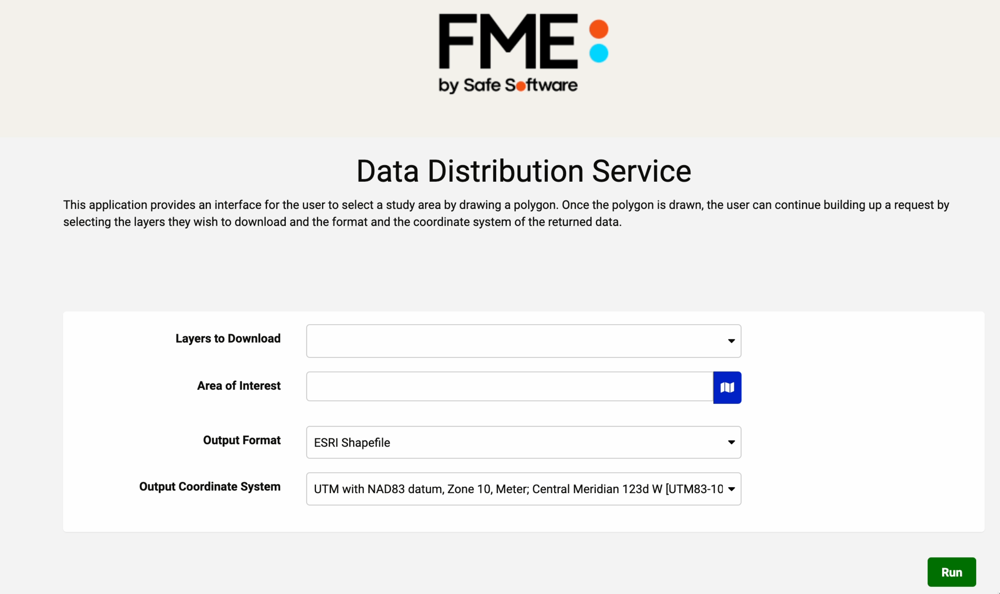

After completing this lesson, you’ll be able to:
Sharing a repository is an excellent option for sharing workspaces with other users who also have access to FME Flow, but what if you want to allow anyone to be able to submit a job without needing to have an account on FME Flow?
This can be accomplished using FME Flow Apps. You can create an FME Flow App by clicking on Flow Apps from the FME Flow Menu:
To manage FME Flow Apps, click on Manage Workspace Apps. From here, you can manage all your existing apps and create new ones.

When creating a new Flow App, you will be able to select which workspace you would like your app to run and also set an expiration date for the app. This is useful if you would like to temporarily share the app, then disable it after a set period of time.
Next, you can select which Published Parameters you would like to be displayed for your end-users to set when they use your Flow App:
And finally, you can customize the appearance of your Flow App by changing the background color, adding logos, icons, and banners.
An FME Flow App URL will then be generated. Anyone with that URL will be able to run the app that you created without having to log into FME Flow first.
The FME Flow App link will open up a simplified Run Workspace page:
The following example is made with an older version of FME Flow and therefore may contain older naming conventions/styling
View an example FME Flow App. This app provides a simple self-serve spatial data download service. By using a data distribution map for retrieving data, a user can download datasets for their selected area of interest. This can save users the tedious tasks of cleaning, transforming, and converting their data which will allow them to jump directly into the analysis phase.
